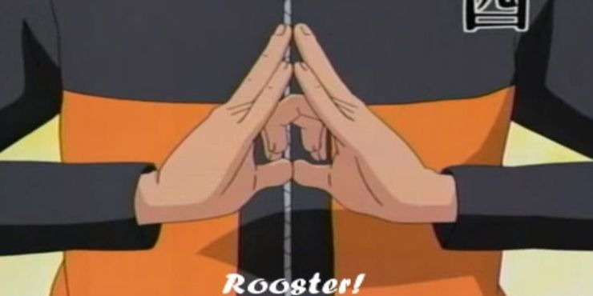
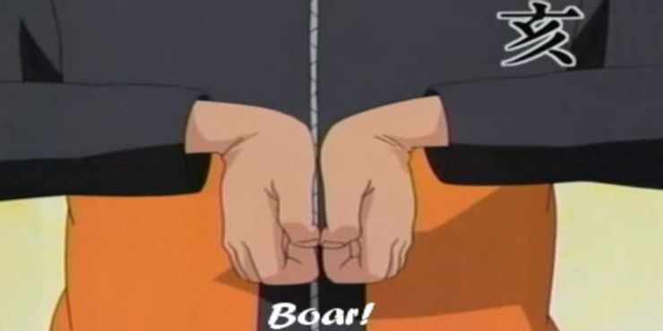
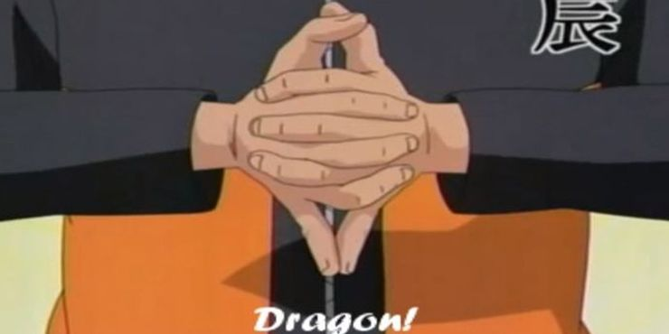
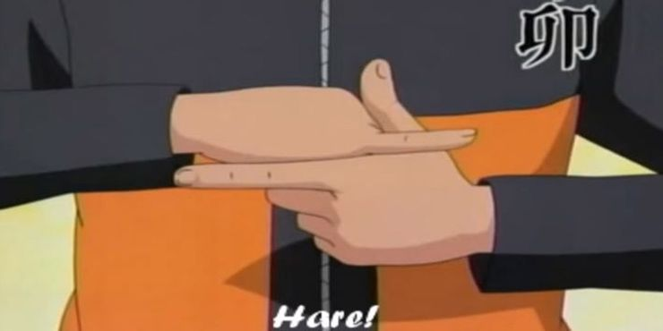
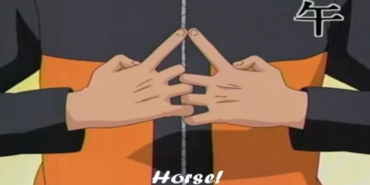

Seals (印, In, English TV: Hand Signs) are used to perform many ninjutsu, genjutsu, and other secret arts other
than taijutsu. Invented by Indra Ōtsutsuki, they are designed to aid people in properly summoning and
moulding chakra necessary to perform a technique. There are different sequences of hand seals for every
technique, requiring memorisation.
While techniques may require a number of hand seals to work, a
skilled ninja can use less or even one to perform the same technique. An example of this is the Water Release:
Water Dragon Bullet Technique, which requires a total of 44 hand seals to activate. Tobirama Senju, the
Second Hokage, only needed to use one hand seal to complete the technique, a testament to his skill. In fact,
by Part II, Sasuke Uchiha has managed to master the Chidori to the point of not needing a single hand seal to
invoke it and could use Fire Release techniques with only one hand seal. By reading the hand seals of the
opponent, a ninja can predict the nature of the technique to be performed, which is virtually unavoidable if
read by the Sharingan.
TORI (BIRD)
Tori, or Bird, is based on
the Chinese zodiac sign, the Rooster. As such, this Naruto hand sign represents the element of Wind or the Wind
Release nature transformation. It allows the user to procure wind-based ninjutsu techniques. One of the most
prominent users of this hand sign or the techniques associated with it is Naruto himself, especially when using
Rasengan.
The hand sign is quite simple but confusing in fast and precise motions. Your middle finger and pinky have to
form an angular arch while making your ring finger and index fingers intersect; meanwhile, the thumbs need to
touch tips.
I (BOAR)
I, or Boar, is based on
the Chinese zodiac sign of the Pig. It is not crucial for any particular basic nature transformation technique.
Nevertheless, it is quite essential to a successful summoning jutsu (the one first introduced to Naruto by
Jiraiya to summon giant sentient toads).
At first glance, it looks easy but you might actually strain your
muscles trying it out. You have to form a partial fist and stick your palms together while keeping your forearms
parallel to the ground. It's really effective for summoning a dual carpal tunnel syndrome.
INU (DOG)
 Inu, or Dog, is -
unsurprisingly - based on the Chinese zodiac sign of the same animal. Like Tori, the hand sign is also
instrumental in nature transformation techniques; this one is for the Water Release.
Inu, or Dog, is -
unsurprisingly - based on the Chinese zodiac sign of the same animal. Like Tori, the hand sign is also
instrumental in nature transformation techniques; this one is for the Water Release.
As such, a lot of water-proficient ninjas, such as Zabuza and Kisame, use this hand sign a lot. Inu is one of
the easiest hand signs to perform. It only involves placing your left open palm atop your right fist
TATSU (DRAGON)
Also known as the
Dragon, the Tatsu is based on the Chinese zodiac sign of the same creature. It has no attached elemental
property to it, meaning it's not needed as a precursor for nature transformation jutsu. However, when used in
conjunction with those, it produces a dragon-shaped manifestation of that particular element.
It's fancy,
sure, but the cost is you giving yourself some nasty cramps to your fingers. It's quite difficult for a normal
human to perform the hand sign since it requires you stacking four of your half-closed fingers alternately with
both of your pinkies sticking out at the bottom and touching at the tips.
USAGI (HARE)
The Hare, or Usagi in
Japanese, is based on the Chinese zodiac sign of the Rabbit. It's not necessary for basic nature transformation
but it's commonly used by Sasuke or Kakashi whenever they are channeling the Chidori or lightning hands.
The hand sign is quite easy on paper but confusing in practice. You can do it by forming a finger pistol
with your left index finger and thumb sticking out while sliding your right pinky between them; easy, right?
UMA (HORSE)
The Uma, which is
Japanese for the Horse, is based on the Chinese zodiac sign of the same animal. Again, it's unnecessary for
basic nature transformation release but Sasuke can be seen commonly using the hand sign for his Fireball
technique. It's also used in dispelling illusory genjutsu techniques.
It's not as difficult as the Tatsu but you'll need to stretch your fingers quite a bit to do it
successfully. Your index fingers must connect at the tips while you stack your other finger's knuckles with the
right digits always at the top. Both palms must also face inward.
>Home
Page